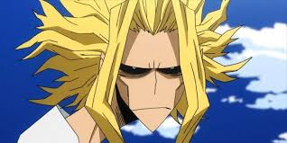
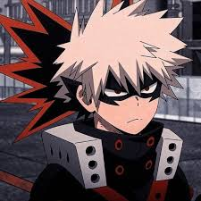

All Might
Quirk: One For All
All Might, the Symbol of Peace, is a hero with immense strength and the mentor to Izuku Midoriya.

Izuku Midoriya
Quirk: One For All
Izuku, originally Quirkless, inherits the power of All Might and strives to become a true hero.

Katsuki Bakugo
Quirk: Explosion
Bakugo is known for his fiery personality and explosive combat skills, always striving to be the best.

Shoto Todoroki
Quirk: Half-Cold Half-Hot
Shoto has the ability to control both ice and fire, and he's constantly grappling with his family legacy.